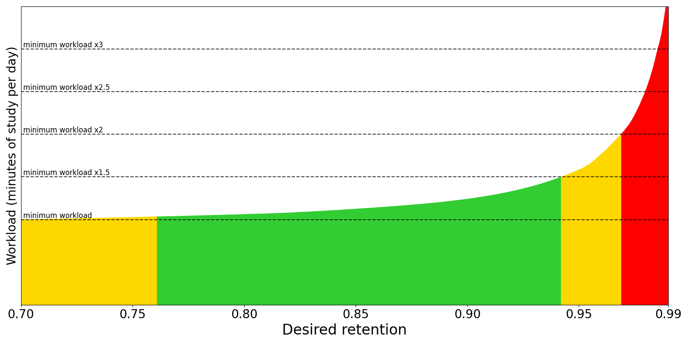

Toʻplam sozlamalari
Toʻplam sozlamalari asosan Anki kartalarni qanday rejalashtirishini boshqaradi. Sozlamalarni oʻzgartirishdan oldin bir necha hafta standart qiymatlar bilan ishlab, Anki qanday ishlashini his qilib koʻrish tavsiya etiladi. Oʻzgartirishdan oldin sozlamalarning maʼnosini yaxshi tushunib oling: xatolar Anki samaradorligini pasaytirishi mumkin.
Kompyuterda toʻplam sozlamalarini ochish uchun quyidagilardan birini bajaring:
- Decks (Toʻplamlar) ekranidagi tishli gʻildirak belgisini bosing.
- Decks ekranida toʻplamni tanlang, keyin ekranning pastidagi Options (Sozlamalar) tugmasini bosing.
- Takrorlash rejimida More > Options (Yana > Sozlamalar) ni bosing.
- Takrorlash rejimida O tugmasini bosing.
Mana toʻplam sozlamalari haqida jamiyat aʼzolari oldin yozgan baʼzi postlar (inglizcha):
Presets (Tayyor sozlamalar toʻplami)
Anki sozlamalarni turli toʻplamlar oʻrtasida ulashish imkonini beradi, shunda bir nechta toʻplamdagi sozlamalarni birdaniga yangilash osonlashadi. Buning uchun sozlamalar _presetlar_ga guruhlanadi. Presetdagi biror sozlamani oʻzgartirsangiz, oʻzgarish shu presetdan foydalanadigan barcha toʻplamlarga qoʻllanadi. Yangi yaratilgan barcha toʻplamlar "Default" presetidan foydalanadi.
Sozlamalarni faqat bitta toʻplamda oʻzgartirib, boshqalarida oʻzgartirmaslik uchun Deck Options oynasining yuqori oʻng burchagidagi strelka belgisini bosing. U yerda quyidagilarni qilishingiz mumkin:
- Save (Saqlash): toʻplam sozlamalarida qilgan barcha oʻzgarishlaringizni saqlaydi.
- Add Preset (Preset qoʻshish): shu toʻplam uchun standart sozlamalarga ega yangi preset qoʻshadi.
- Clone (Nusxalash): joriy presetning nusxasini yaratadi. Baʼzi sozlamalarni oʻzgartirib, qolganini oʻz holicha qoldirmoqchi boʻlsangiz, foydali.
- Rename (Nomini oʻzgartirish): joriy preset nomini oʻzgartiradi.
- Delete (Oʻchirish): joriy presetni oʻchiradi. Bu keyingi sinxronlashingizni bir tomonlama sinxronlashga aylantiradi.
- Save to All Subdecks (Barcha ichki toʻplamlarga saqlash): Save kabi, lekin tanlangan presetni hozirgi toʻplamning barcha ichki toʻplamlariga ham belgilaydi.
Toʻplam sozlamalari avvalgi kartalarga taʼsir qilmaydi. Masalan, kartaga notoʻgʻri javob berilgandan keyingi kutish vaqtini boshqaradigan sozlamani oʻzgartirsangiz, oʻzgartirishdan oldin xato qilgan kartalaringiz yangi emas, eski kutish vaqti bilan qolaveradi.
Subdecks (Ichki toʻplamlar)
Toʻplamingizda ichki toʻplamlar boʻlsa va ulardan bir yoki bir nechtasi asosiy toʻplamdan boshqacha sozlamalarga ega boʻlishini xohlasangiz, ularni alohida presetlarga biriktirishingiz mumkin. Anki kartani koʻrsatayotganda karta qaysi ichki toʻplamda ekanini tekshiradi va oʻsha toʻplam sozlamalaridan foydalanadi. Ikkita istisno bor:
- Ichki toʻplamning New cards/day (Kuniga yangi kartalar) va Maximum reviews/day (Kuniga maksimal takrorlashlar) chegaralari shu ichki toʻplamdan nechta karta olinishi mumkinligiga taʼsir qiladi. Lekin oʻqish seansida koʻradigan kartalarning umumiy soni siz oʻqish uchun tanlagan toʻplamning chegaralari bilan boshqariladi.
- Koʻrsatish tartibi sozlamalari joriy kartaning toʻplamidan emas, siz oʻqish uchun tanlagan toʻplamdan olinadi.
Misol uchun, sizda quyidagi kolleksiya bor deylik:
- Deck A (Preset 1)
- Deck A::Subdeck B (Preset 2)
Preset 1 va Preset 2 ikkita farqdan tashqari bir xil:
- Preset 1:
- Learning steps:
1m 10m - New/review order:
Mix with reviews
- Learning steps:
- Preset 2:
- Learning steps:
20m 2h - New/review order:
Show after reviews
- Learning steps:
Subdeck B ni oʻqishni tanlasangiz:
- Barcha yangi kartalar uchun oʻrganish qadamlari
20m 2hboʻladi (Preset 2 qoʻllanadi). - Barcha yangi kartalar takrorlashlardan keyin koʻrsatiladi (Preset 2 qoʻllanadi).
Deck A ni oʻqishni tanlasangiz:
- Deck A dagi yangi kartalar uchun oʻrganish qadamlari
1m 10mboʻladi (Preset 1 qoʻllanadi). - Subdeck B dagi yangi kartalar uchun oʻrganish qadamlari
20m 2hboʻladi (Preset 2 qoʻllanadi). - Barcha yangi kartalar takrorlashlar bilan aralashtiriladi (Preset 1 qoʻllanadi).
Daily Limits (Kunlik chegaralar)
New Cards/Day (Kuniga yangi kartalar)
Bu sozlama dasturni ochgan har bir kuningizda nechta yangi karta kiritilishini boshqaradi. Chegaradan kamroq oʻqisangiz yoki bir kunni oʻtkazib yuborsangiz, keyingi kuni sonlar yana asl sozlamaga qaytadi: sizga chegara ruxsat bergandan koʻp karta berilmaydi.
Ichida ichki toʻplamlari bor toʻplamni oʻqiyotganda har bir ichki toʻplamga qoʻyilgan chegaralar shu toʻplamdan olinadigan kartalarning maksimal sonini boshqaradi. Tanlangan toʻplamning chegaralari esa koʻrsatiladigan kartalarning umumiy sonini boshqaradi.
Oldingi versiyalar haqida bu FAQ sahifasiga qarang.
Yangi kartalarni oʻrganish vaqtincha kuniga qilishingiz kerak boʻlgan takrorlashlar sonini oshiradi, chunki yangi oʻrganilgan material takrorlashlar oraligʻidagi kutish vaqti sezilarli darajada uzayguncha bir necha marta takrorlanishi kerak. Har kuni muntazam 20 ta yangi karta oʻrgansangiz, kunlik takrorlashlaringiz taxminan 200 ta karta boʻlishini kutishingiz mumkin. Takrorlashlar sonini kamaytirish uchun har kuni kamroq yangi karta kiriting, toki takrorlash yuklamangiz kamayguncha. Anki foydalanuvchilarining bir nechtasi dasturdan foydalanishning dastlabki kunlarida hayajon bilan yuzlab yangi karta oʻrganib, keyin takrorlashlar koʻpligidan charchab qolgan.
Maximum Reviews/Day (Kuniga maksimal takrorlashlar)
Har kuni koʻrsatiladigan takrorlash kartalari soniga yuqori chegara qoʻyishga imkon beradi. Bu chegaraga yetganda, kutib turgan karta koʻp boʻlsa ham, Anki shu kun uchun boshqa takrorlash kartalarini koʻrsatmaydi. Muntazam oʻqisangiz, bu sozlama muddati kelgan kartalar sonidagi vaqti-vaqti bilan boʻladigan choʻqqilarni tekislashga yordam beradi va bir hafta tanaffusdan keyin Anki'ga qaytganingizda yuragingiz yorilib ketishidan saqlaydi. Bu sozlama sababli takrorlashlar yashirilgan boʻlsa, tabrik ekranida xabar chiqadi va vaqtingiz boʻlsa, chegarani oshirishni oʻylab koʻrishni taklif qiladi.
Ichida ichki toʻplamlari bor toʻplamni oʻqiyotganda takrorlash chegarasi yangi kartalar chegarasiga oʻxshash ishlaydi.
Anki kun chegarasidan oʻtgan har qanday oʻrganish kartalarini (interday learning cards) ham takrorlashlar soniga qoʻshadi, shuning uchun bunday oʻrganish kartalariga ham takrorlash chegarasi qoʻllanadi.
Per-Deck Daily Limits (Toʻplamga xos kunlik chegaralar)
Bir xil presetni turli toʻplamlar uchun ishlatib, har biriga alohida chegara qoʻyish mumkin. Bu faqat shu maqsadda preset nusxalarini yaratish zaruratini yoʻqotadi va ichki toʻplamlarga maxsus chegaralar qoʻyishni osonlashtiradi.
Anki kunlik chegaralar uchun uchta variant beradi:
- Preset: presetdan foydalanadigan barcha toʻplamlarga qoʻllanadi.
- This deck (Shu toʻplam): faqat aniq bir toʻplam uchun.
- Today only (Faqat bugun): aniq bir toʻplam uchun va vaqtinchalik.
New Cards Ignore Review Limit (Yangi kartalar takrorlash chegarasini eʼtiborsiz qoldiradi)
Standart holatda takrorlash chegarasi yangi kartalarga ham qoʻllanadi va takrorlash chegarasiga yetilganda yangi kartalar koʻrsatilmaydi. Bu variant yoqilsa, yangi kartalar takrorlash chegarasidan qatʼi nazar koʻrsatiladi.
Muddati oʻtib ketgan takrorlash kartalaringiz toʻplanib qolgan boʻlsa, shu toʻplanib qolganlarni tugatmaguningizcha yangi kartalar kiritishni toʻxtatish tavsiya etiladi. Allaqachon ortda qolgan paytingizda yangi karta kiritishda davom etish vaziyatni yanada yomonlashtirishi mumkin.
Limits Start From Top (Chegaralar yuqoridan boshlanadi)
Standart holatda yuqori darajadagi toʻplamning kunlik chegaralari siz uning ichki toʻplamlaridan birini tanlaganingizda qoʻllanmaydi. Asosiy toʻplamda kuniga 10 ta yangi karta chegarasi, uning ichki toʻplamlarida esa kuniga 20 ta yangi karta chegarasi boʻlishi mumkin. Asosiy toʻplamga qoʻyilgan chegaralar ichki toʻplamdan oʻrganishingiz mumkin boʻlgan yangi kartalar soniga taʼsir qilmaydi.
Bu variant yoqilganda, ichki toʻplam tanlanganida yuqori darajadagi toʻplamlarga qoʻyilgan chegaralar ham unga qoʻllanadi. Yuqoridagi misolda ichki toʻplamlardan 20 ta emas, faqat 10 ta yangi karta oʻrgana olasiz.
Bu variant alohida ichki toʻplamlarni oʻrganishni xohlasangiz-u, barcha ichki toʻplamlardagi kartalar uchun umumiy chegara qoʻymoqchi boʻlsangiz foydali.
New Cards (Yangi kartalar)
Bu yerdagi sozlamalar faqat yangi kartalar va oʻrganilayotgan kartalarga taʼsir qiladi. Karta bitirilgandan (yaʼni barcha oʻrganish qadamlaridan oʻtgandan) keyin bu boʻlimdagi sozlamalar unga qoʻllanmaydi.
Learning Steps (Oʻrganish qadamlari)
Oʻrganish takrorlashlari sonini va ular oʻrtasidagi kutish vaqtini boshqaradi. Bitta yoki bir nechta kutish vaqtini boʻsh joy bilan ajratib kiritish kerak. Takrorlash vaqtida har safar Good (Yaxshi) ni bosganingizda karta keyingi qadamga oʻtadi. Har safar Again (Qayta) ni bosganingizda esa birinchi qadamga qaytadi.
Masalan, oʻrganish qadamlaringiz 1m 10m 1d deylik.
- Again ni bossangiz, karta birinchi qadamdan oʻtadi va 1 daqiqadan keyin yana koʻrsatiladi.
- Yangi kartada yoki 1 daqiqalik qadamdan keyin Good ni bossangiz, karta keyingi qadamga oʻtadi va 10 daqiqadan keyin yana koʻrsatiladi.
- 10 daqiqalik qadamdan keyin kartada Good ni bossangiz, karta keyingi kunga qoldiriladi.
- Keyingi kuni kartada Good ni bossangiz, karta oʻrganishni bitiradi (graduates) va takrorlash kartasiga aylanadi. Karta graduating interval (oʻrganishni bitirish intervali) bilan belgilangan kutishdan keyin yana koʻrsatiladi.
Hard (Qiyin) tugmasi qaysi qadamda ekaningizga qarab turlicha ishlaydi.
- Birinchi qadamda boʻlsangiz, Hard tugmasi
6mkutishni koʻrsatadi.6m— dastlabki ikki qadamning, yaʼni1mva10mning oʻrtachasi.- Istisno: faqat bitta oʻrganish qadami boʻlsa, Hard tugmasi shu qadamdan 1,5 baravar uzoq kutishni koʻrsatadi. Bu kutish oʻrganish qadamidan koʻpi bilan 1 kun uzun boʻladi.
- Boshqa har qanday qadamda boʻlsangiz, Hard tugmasi shu qadamni takrorlaydi.
Oʻqiydigan boshqa narsa qolmagan boʻlsa, Anki standart holatda oʻrganilayotgan kartalarni 20 daqiqagacha oldinroq koʻrsatadi. Buni oʻchirish yoki oldindan koʻrish vaqtini oʻzgartirish uchun Sozlamalar sahifasiga qarang.
Day Boundaries (Kun chegaralari)
Anki kichik qadamlar va kun chegarasidan oʻtadigan qadamlarga turlicha munosabatda boʻladi. Kichik qadamlarda kutish vaqti oʻtishi bilan karta takrorlash va yangi kartalardan ustun qoʻyilib darhol koʻrsatiladi. Bu kartaga siz soʻragan kutish vaqtiga iloji boricha yaqin paytda javob bera olishingiz uchun qilinadi. Aksincha, qadam kun chegarasidan oʻtsa, kutish vaqti avtomatik ravishda kunlarga aylantiriladi. Masalan, keyingi kun 5 soatdan keyin boshlanib, kutish vaqti 6 soat boʻlsa, Anki kutishni 1 kunga aylantiradi.
Graduating Interval (Oʻrganishni bitirish intervali)
Oxirgi oʻrganish qadamida Good tugmasi bosilgandan keyin kartani yana koʻrsatishdan oldin kutiladigan kunlar soni. Yaʼni bu oʻrganilayotgan karta oʻrganishni bitirgandan keyingi birinchi interval. Shu boʻlimning yuqoridagi misoliga qarang.
Easy Interval (Easy intervali)
Kartada Easy tugmasi bosilgandan keyin uni yana koʻrsatishdan oldin kutiladigan kunlar soni.
Easy (Oson) tugmasi qaysi qadamda boʻlishidan qatʼi nazar, oʻrganilayotgan kartalarni takrorlash kartalariga aylantiradi va ularga bu sozlamada belgilangan kutishni beradi. Easy intervali kamida graduating interval qadar uzun boʻlishi kerak, odatda esa bir necha kun uzunroq.
Insertion Order (Qoʻshish tartibi)
Anki yangi kartalarni toʻplamga tasodifiy yoki ketma-ket qoʻshishini boshqaradi. Bu sozlamani oʻzgartirganingizda, Anki joriy presetdagi toʻplamlarni qayta tartiblaydi.
Anki'ning soʻnggi versiyalarida bu sozlamani Sequential (Ketma-ket) holatida
qoldirib, oʻrniga koʻrsatish tartibini
sozlashingiz kerak.
Lapses (Unutishlar)
Takrorlash kartasida Again ni bosganingizda, bu lapse (unutish) deb ataladi. Bu yerdagi sozlamalar shunday unutilgan kartalarga taʼsir qiladi.
Relearning Steps (Qayta oʻrganish qadamlari)
Oʻrganish qadamlari bilan bir xil, lekin unutilgan kartalar uchun. Takrorlash kartasiga javob bera olmasangiz (Again ni bossangiz), karta yana takrorlash kartasiga aylanishidan oldin _qayta oʻrganish qadamlari_dan oʻtadi.
Qadamlarni boʻsh qoldirsangiz, karta qayta oʻrganishni oʻtkazib yuboradi va standart holatda unga yangi interval — 1 kun beriladi.
Minimum Interval (Minimal interval)
Karta qayta oʻrganishni tugatgandan keyin kamida necha kun kutishi kerakligini belgilaydi. Standart qiymat — bir kun: qayta oʻrganish tugagach, karta keyingi kuni yana koʻrsatiladi.
Leeches (Leech kartalar)
Anki leech kartalar bilan qanday ishlashini boshqaradi. Batafsil maʼlumot uchun leech kartalar boʻlimiga qarang.
Display Order (Koʻrsatish tartibi)
Bu boʻlimdagi sozlamalar hozir koʻrsatilayotgan kartaning toʻplamidan emas, siz oʻqish uchun tanlagan toʻplamdan olinadi.
Koʻrsatish tartibi haqida qoʻshimcha maʼlumotni oʻqish boʻlimida topish mumkin.
New Card Gather Order (Yangi kartalarni yigʻish tartibi)
Anki toʻplamdan yangi kartalarni qanday yigʻishini boshqaradi. Variantlar:
-
Deck (Toʻplam): har bir ichki toʻplamdan tartib bilan, yuqoridan boshlab kartalarni yigʻadi. Har bir ichki toʻplamdagi kartalar pozitsiyasi oshib borish tartibida yigʻiladi. Tanlangan toʻplamning kunlik chegarasiga yetilsa, yigʻish barcha ichki toʻplamlar tekshirilmasdan toʻxtashi mumkin. Bu tartib katta kolleksiyalarda eng tez ishlaydi va yuqoriga yaqinroq ichki toʻplamlarga ustunlik berishga imkon beradi.
Toʻplamlar/ichki toʻplamlar har doim alifbo tartibida joylashadi, shuning uchun ularning joylashish tartibini boshqarish uchun nomlariga 001 kabi raqamli prefiks qoʻshishingiz mumkin. Elementlarni eng yuqoriga yoki eng pastga qoʻyish uchun
_va~ni prefiks sifatida ham ishlatishingiz mumkin.Pozitsiya tartibi dastlab qoʻshish tartibi sozlamasiga bogʻliq boʻlsa-da, kartalarni turli usullar bilan qoʻlda qayta joylashtirishingiz mumkin.
-
Deck, then random notes (Toʻplam, keyin tasodifiy yozuvlar): har bir ichki toʻplamdan tartib bilan, yuqoridan boshlab kartalarni yigʻadi. Har bir ichki toʻplamdagi kartalar tasodifiy tanlangan yozuvlardan yigʻiladi.
-
Ascending position (Pozitsiya oshish tartibida): kartalarni pozitsiyasi (due #) oshish tartibida yigʻadi, odatda bu eng avval qoʻshilganlari birinchi degani.
-
Descending position (Pozitsiya kamayish tartibida): kartalarni pozitsiyasi (due #) kamayish tartibida yigʻadi, odatda bu eng oxirgi qoʻshilganlari birinchi degani.
-
Random notes (Tasodifiy yozuvlar): kartalarni tasodifiy tanlangan yozuvlardan yigʻadi.
-
Random cards (Tasodifiy kartalar): kartalarni tasodifiy tartibda yigʻadi.
New Card Sort Order (Yangi kartalarni saralash tartibi)
Yangi kartalar yigʻilgandan keyin qanday saralanishini boshqaradi. Variantlar:
-
Card type, then order gathered (Karta turi, keyin yigʻilgan tartib): kartalarni karta turi raqami tartibida koʻrsatadi. Har bir karta turi raqamidagi kartalar yigʻilgan tartibda koʻrsatiladi. Qardosh kartalarni yashirishni oʻchirib qoʻygan boʻlsangiz, bu old→orqa kartalarning barchasi orqa→old kartalardan oldin koʻrinishini taʼminlaydi. Bu tartib qardosh kartalar bir-biriga juda yaqin chiqmasligini xohlasangiz foydali.
-
Order gathered (Yigʻilgan tartib): kartalarni aynan yigʻilgan tartibida koʻrsatadi. Qardosh kartalarni yashirish oʻchirilgan boʻlsa, bu odatda barcha qardosh kartalar ketma-ket chiqishiga olib keladi.
-
Card type, then random (Karta turi, keyin tasodifiy): kartalarni karta turi raqami tartibida koʻrsatadi, lekin har bir karta turi raqamidagi kartalarni aralashtiradi. Bu tartib qardosh kartalar bir-biriga juda yaqin chiqmasligini, lekin kartalar tasodifiy tartibda chiqishini xohlasangiz foydali.
-
Random note, then card type (Tasodifiy yozuv, keyin karta turi): yozuvlarni tasodifiy tanlaydi, keyin ularning barcha qardosh kartalarini tartib bilan koʻrsatadi.
-
Random (Tasodifiy): yigʻilgan kartalarni toʻliq aralashtiradi.
New/Review Order (Yangi/takrorlash tartibi)
Yangi kartalar takrorlash kartalari bilan aralashtirilsinmi, ulardan oldin koʻrsatilsinmi yoki keyin koʻrsatilsinmi.
Interday Learning/Review Order (Kunlararo oʻrganish/takrorlash tartibi)
Kun chegarasidan oʻtadigan (qayta) oʻrganish kartalari takrorlash kartalari bilan aralashtirilsinmi, ulardan oldin koʻrsatilsinmi yoki keyin koʻrsatilsinmi. Oʻrganish kartalari odatda takrorlash kartalaridan qiyinroq boʻlgani uchun, baʼzi foydalanuvchilar ularni oxirida koʻrishni (oson narsalarni avval bajarib olish uchun) yoki boshida koʻrishni (unutilganlarni takrorlashga koʻproq vaqt qoldirish uchun) afzal koʻradi.
Review Sort Order (Takrorlashni saralash tartibi)
Takrorlash kartalari qanday saralanishini boshqaradi. Variantlar:
-
Due date, then random (Muddat, keyin tasodifiy): standart tartib uzoqroq kutayotgan kartalarga ustunlik beradi. Ortda qolmagan boʻlsangiz yoki toʻplanib qolgan kartalar kam boʻlsa, shu tartib tavsiya etiladi. Uzoq tanaffus qilgan boʻlsangiz yoki takrorlashlarda ortda qolgan boʻlsangiz, saralash tartibini vaqtincha oʻzgartirishni oʻylab koʻrishingiz mumkin.
-
Due date, then deck (Muddat, keyin toʻplam): bu ham uzoqroq kutayotgan kartalarga ustunlik beradi, keyin har bir ichki toʻplamning takrorlash kartalarini navbatma-navbat koʻrsatadi.
-
Deck, then due date (Toʻplam, keyin muddat): har bir ichki toʻplamning takrorlash kartalarini navbatma-navbat koʻrsatadi. Bu tartib odatda tavsiya etilmaydi, chunki materialning doim bir xil tartibda chiqishi javobni kontekstga qarab topishni osonlashtiradi va zaifroq xotiraga olib keladi.
-
Ascending intervals (Intervallar oshish tartibida): intervali qisqaroq kartalarni birinchi koʻrsatadi.
-
Descending intervals (Intervallar kamayish tartibida): intervali uzunroq kartalarni birinchi koʻrsatadi.
-
Ascending ease (Ease oshish tartibida): qiyinroq kartalarni birinchi koʻrsatadi.
-
Descending ease (Ease kamayish tartibida): osonroq kartalarni birinchi koʻrsatadi.
-
Relative overdueness (Nisbiy kechikish): unutgan boʻlishingiz ehtimoli yuqoriroq kartalarni birinchi koʻrsatadi. Agar tugatish uchun biroz vaqt oladigan katta orqada qolgan kartalar toʻplamingiz boʻlsa va koʻproq karta unutish ehtimolini kamaytirmoqchi boʻlsangiz, bu odatda tavsiya etiladi.
SM-2 algoritmidan foydalanilganda kechikish kartalar qanchalik kechikkani va intervali qanchalik uzun ekanini solishtirish orqali aniqlanadi. Masalan, joriy intervali 5 kun boʻlib, 2 kun kechikkan karta, joriy intervali 10 kun boʻlib, 3 kun kechikkan kartadan oldin koʻrsatiladi.
FSRS yoqilganda bu saralash tartibi olib tashlanadi; uning FSRS’dagi ekvivalenti — Ascending retrievability (Esga tushirish ehtimoli oshish tartibida). U har bir kartaning retrievability (eslab qolish ehtimoli) va presetdagi desired retention (istalgan esda saqlash darajasi) asosida hisoblanadi.
Burying (Yashirish)
Anki kartalarni yigʻayotganda avval kun ichidagi oʻrganish kartalarini, keyin kunlararo oʻrganish kartalarini, keyin takrorlash kartalarini va oxirida yangi kartalarni yigʻadi. Bu yashirish qanday ishlashiga taʼsir qiladi:
- Barcha yashirish variantlari yoqilgan boʻlsa, shu roʻyxatda eng avval keladigan qardosh karta koʻrsatiladi. Masalan, takrorlash kartasi yangi kartadan ustun qoʻyilib koʻrsatiladi.
- Roʻyxatda keyinroq keladigan qardosh kartalar oldingi karta turlarini yashira olmaydi. Masalan, yangi kartalarni yashirishni oʻchirib qoʻysangiz va yangi kartani oʻqisangiz, u kunlararo oʻrganish yoki takrorlash kartalarini yashirmaydi va bir seansda ham takrorlash, ham yangi qardosh kartani koʻrishingiz mumkin.
Variantlar:
- Bury new siblings (Yangi qardosh kartalarni yashirish): bir yozuvning boshqa yangi kartalari (masalan, teskari kartalar, qoʻshni cloze deletion lar) keyingi kungacha kechiktirilsinmi.
- Bury review siblings (Takrorlash qardosh kartalarini yashirish): bir yozuvning boshqa takrorlash kartalari keyingi kungacha kechiktirilsinmi.
- Bury interday learning siblings (Kunlararo oʻrganish qardosh kartalarini yashirish): bir yozuvning kun chegarasidan oʻtgan boshqa oʻrganish kartalari keyingi kungacha kechiktirilsinmi.
Kartalarni yashirish haqida koʻproq maʼlumot uchun qoʻllanmaning bu boʻlimiga qarang.
Audio
-
Don't play audio automatically (Audioni avtomatik ijro etmaslik): standart holatda Anki kartalardagi har qanday audioni avtomatik ijro etadi. Bu variantni yoqsangiz, audio qayta ijro tugmasi R yoki F5 bosilmaguncha ijro etilmaydi.
-
Skip question when replaying answer (Javobni qayta ijro etishda savolni oʻtkazib yuborish): javob tomonida qayta ijro amalini ishlatganingizda savol tomonidagi audio ijro etilishini boshqaradi. Shuni yodda tutingki, Anki
{{FrontSide}}maydonidagi audioni avtomatik ijro etmaydi. Bu variant avtomatik ijro xulqiga taʼsir qilmaydi.
Timers (Taymerlar)
Anki har bir kartaga javob berish uchun qancha vaqt ketishini kuzatib boradi, shunda har kuni oʻqishga qancha vaqt sarflanganini koʻrsata oladi. Sarflangan vaqt rejalashtirishga taʼsir qilmaydi.
Internal Timer (Ichki taymer)
- Maximum answer seconds (Javob uchun maksimal soniyalar): standart chegara — 60 soniya. Bundan uzoqroq vaqt olsangiz, Anki kompyuteringiz oldidan turib ketgansiz yoki chalgʻigansiz deb hisoblaydi va qayd etilgan vaqtni 60 soniya bilan cheklaydi, shunda statistikangiz notoʻgʻri boʻlib qolmaydi.
- Bu ichki taymer savol koʻrsatilgan paytdan javobingizni baholash uchun tugmani bosguningizcha ishlaydi. Kartaga doim 60 soniyadan koʻproq vaqt sarflasangiz, bu chegarani oshirishni yoki yana ham yaxshisi, kartalaringizni soddalashtirishni oʻylab koʻring.
On-screen Timer (Ekrandagi taymer)
- Show on-screen timer (Ekrandagi taymerni koʻrsatish): Study (Oʻrganish) ekranida har bir kartani oʻrganishga ketayotgan vaqtni sanaydigan taymerni koʻrsatadi. (Bu taymer ichki taymer uchun belgilangan Maximum answer seconds ga yetganda toʻxtaydi.)
- Stop on-screen timer on answer (Javob berilganda ekrandagi taymerni toʻxtatish): ekrandagi taymer javobni koʻrsatgan paytingizdan javobingizni baholash uchun tugmani bosguningizcha ishlashda davom etishi kerakmi. Bu sozlama statistikangiz uchun qayd etiladigan vaqtga taʼsir qilmaydi.
Auto Advance (Avtomatik oʻtish)
Anki 23.12 yoki undan yangi versiya kerak. Auto Advance belgilangan vaqt oʻtgach baʼzi amallarni avtomatik bajarish imkonini beradi. Undan foydalanish uchun avval Seconds to show question for (Savolni koʻrsatish soniyalari) va/yoki Seconds to show answer for (Javobni koʻrsatish soniyalari) ga noldan katta vaqt qoʻyishingiz kerak. Keyin oʻrganish ekranida More (Yana) tugmasidan Auto Advance amalini tanlab, avtomatik oʻtishni boshlang.
Easy Days (Yengil kunlar)
Haftaning baʼzi kunlarida, masalan yakshanba kunlari, Anki'ga kamroq vaqt sarflamoqchi boʻlsangiz, bu funksiya yordam beradi. Interval hisoblangandan keyin muddat sanasini oʻzgartirish uchun u ozgina moslashtiriladi. Shuni yodda tutingki, barcha kunlarni "Reduced" yoki "Minimum" ga qoʻyish barcha kunlarni "Normal" ga qoʻygan bilan bir xil ish yuklamasini beradi. Bu funksiya ham FSRS bilan, ham eski SM-2 algoritmi bilan ishlaydi. Easy Days sozlamasini oʻzgartirish mavjud intervallarni orqaga qarab oʻzgartirmaydi va faqat kelajakdagi intervallarga taʼsir qiladi. Oddiy qilib aytganda, muddati kelgan kartalar sonida darhol oʻzgarish koʻrmaysiz.
FSRS
Free Spaced Repetition Scheduler (FSRS) — Anki'ning eski SuperMemo 2 (SM-2) algoritmiga muqobil. U qancha maʼlumotni unutishingiz mumkinligini aniqroq baholash orqali, bir xil vaqt ichida koʻproq materialni eslab qolishga yordam beradi.
FSRS’ni yoqsangiz, baʼzi yangi sozlamalar paydo boʻladi, Graduating interval, Easy bonus kabi SM-2 ga xos sozlamalar esa yashiriladi. Bu sozlama barcha presetlar uchun umumiy.
Yoqishdan oldin
- Barcha Anki klientlaringiz FSRS’ni qoʻllab-quvvatlashiga ishonch hosil qiling. Anki 23.10, AnkiMobile 23.10 va AnkiWeb uni qoʻllab-quvvatlaydi. AnkiDroid uni 2.17+ versiyalarda qoʻllab-quvvatlaydi. Klientlaringizdan biri qoʻllab-quvvatlamasa, hammasi toʻgʻri ishlamaydi.
- Ilgari FSRS’ning "custom scheduling" (maxsus rejalashtirish) versiyasidan foydalangan boʻlsangiz, FSRS’ni yoqishdan oldin maxsus rejalashtirish boʻlimini tozalab oling.
A Short Guide (Qisqa qoʻllanma)
- FSRS’ni toʻplam sozlamalari sahifasining pastidagi "FSRS" boʻlimida yoqing. FSRS faqat global yoqilishi mumkin: uni baʼzi presetlar uchun yoqib, boshqalari uchun oʻchirib qoʻyib boʻlmaydi.
- Barcha oʻrganish va qayta oʻrganish qadamlaringiz 1d dan qisqa va bir kun ichida tugatiladigan boʻlishiga ishonch hosil qiling. 23h bir kundan kam boʻlsa ham tavsiya etilmaydi, chunki bu qadamni birinchi takrorlashingiz bilan bir kunda tugata olmaysiz. 10m yoki 30m kabi qadamlar yaxshi.
- "FSRS parameters" maydoni ostidagi "Optimize" tugmasini bosing. "The FSRS parameters currently appear to be optimal" degan xabarni koʻrsangiz, bu yaxshi.
- Desired retention (istalgan esda saqlash darajasi) qiymatini tanlang: muddati kelganda muvaffaqiyatli eslangan kartalar ulushi. Bu FSRS’dagi eng muhim sozlama. Yuqoriroq retention intervallarning qisqarishiga va kuniga koʻproq takrorlashga olib keladi. Standart qiymat — 90%, bu esda saqlash va ish yuklamasi oʻrtasida yaxshi muvozanat beradi. 90% dan yuqorida ish yuklamasi juda tez oshadi, 97% dan yuqorida esa ish yuklamasi ortiqcha boʻlib ketishi mumkin. Desired retention qiymatini tanlashda "Compute minimum recommended retention" dan foydalanishingiz mumkin.
Parametrlar va desired retention presetga xos, shuning uchun turli sozlamali bir nechta preset yaratishingiz mumkin.
FSRS deyarli har qanday odatga moslasha oladi, faqat bittasidan tashqari: maʼlumotni unutganingizda "Again" oʻrniga "Hard" ni bosish. "Hard" ni bossangiz, FSRS maʼlumotni toʻgʻri esladingiz (ikkilanib va koʻp aqliy kuch sarflab boʻlsa ham) deb hisoblaydi. Maʼlumotni eslay olmaganingizda "Hard" ni bossangiz, barcha intervallar asossiz darajada baland boʻlib ketadi. Shuning uchun bunday odatingiz boʻlsa, uni oʻzgartiring va maʼlumotni unutganingizda "Again" dan foydalaning.
Qoʻshimchalar (add-on) bilan moslik haqida umumiy qoida: agar qoʻshimcha qandaydir tarzda intervallar va rejalashtirishga taʼsir qilsa, uni FSRS bilan ishlatmaslik kerak.
Desired Retention (Istalgan esda saqlash darajasi)
Desired retention kartalar takrorlashga rejalashtirilgan paytda ularni eslash ehtimolingiz qanchalik yuqori boʻlishini boshqaradi. Standart 90% qiymat kartalarni takrorlashga qaytganda ularni eslash ehtimolingiz 90% boʻladigan qilib rejalashtiradi. Bu odatda takrorlashda kartalarning taxminan 90% ini eslash va faqat taxminan 10% ida xato qilish degani.
Mana desired retention'ni oʻzgartirish ish yuklamangizga qanday taʼsir qilishini koʻrsatuvchi grafik:

Grafikning aniq shakli har kim uchun boshqacha. Biroq umumiy shakli taxminan bir xil. Umuman olganda, desired retention pastroq boʻlsa, kuniga ancha kam takrorlash qilasiz, lekin koʻproq karta ham unutasiz. Desired retention 100% ga yaqinlashgan sari ish yuklamasi keskin oshadi. Shu sababli bu sonni oʻzgartirganda ehtiyotkor boʻlishni va uni 97% dan past ushlashni tavsiya qilamiz.
Anki'ning soʻnggi versiyasida bir presetdagi turli toʻplamlar uchun turli desired retention qiymatlarini oʻrnatishingiz mumkin.
Help Me Decide (Qaror qabul qilishga yordam)
Help Me Decide (Experimental) turli esda saqlash darajalarida ish yuklamasini simulyatsiya qilish imkonini beradi. Boshqacha aytganda, oʻzingizga xos retention-ish yuklamasi grafigi qanday koʻrinishini bilib olishingiz mumkin. Bu ehtiyojlaringizga qaysi desired retention qiymati eng mosligini tanlashga yordam beradi.
Bu maʼlumotni nima qilishni bilmasangiz, oʻzingizdan "Kuniga real ravishda nechta takrorlash qila olaman?" yoki "Kuniga takrorlashlarga real ravishda necha daqiqa sarflay olaman?" deb soʻrab, qaysi desired retention qiymati sizga maqbul ish yuklamasini berishini mos grafikdan tekshirib koʻrishingiz mumkin.
Yoki joriy desired retention'dagi kuniga takrorlashlar sonini (yoki kuniga vaqtni) tekshirib, desired retention'ni oʻzgartirsangiz bu qanday oʻzgarishini koʻrishingiz va oʻzingizdan "Shuncha koʻproq eslab qolish uchun shuncha koʻproq oʻqishni xohlaymanmi?" yoki "Shuncha kamroq eslab qolish evaziga shuncha kamroq oʻqishni xohlaymanmi?" deb soʻrashingiz mumkin.
Simulyator haqida koʻproq maʼlumot uchun bu boʻlimni oʻqing.
FSRS Parameters (FSRS parametrlari)
FSRS parametrlari kartalar qanday rejalashtirilishiga taʼsir qiladi. Parametrlarni qoʻlda oʻzgartirmang va ularni boshqa birovdan nusxalamang.
Optimize FSRS Parameters (FSRS parametrlarini optimallashtirish)
FSRS optimizatori xotira qonuniyatlaringizni oʻrganish va takrorlash tarixingizga eng mos keladigan parametrlarni topish uchun mashinaviy oʻrganishdan foydalanadi. Buning uchun optimizatorga parametrlarni nozik sozlash uchun bir necha takrorlash kerak boʻladi.
Optimize tugmasini bosganingizda FSRS takrorlash tarixingizni tahlil qiladi va xotirangiz hamda oʻrganayotgan kontentingiz uchun eng maqbul parametrlarni hosil qiladi. Subyektiv qiyinligi juda farq qiladigan toʻplamlaringiz boʻlsa, ularga alohida presetlar berish tavsiya etiladi, chunki osonroq toʻplamlarning parametrlari qiyinroq toʻplamlarnikidan farq qiladi. Parametrlarni tez-tez optimallashtirish shart emas: oyda bir marta yetarli.
Standart holatda parametrlar joriy presetdan foydalanadigan barcha toʻplamlarning takrorlash tarixidan hisoblanadi. Optimallashtirish uchun qaysi kartalar ishlatilishini oʻzgartirmoqchi boʻlsangiz, parametrlarni optimallashtirishdan oldin qidiruvni sozlashingiz mumkin.
Shuningdek, Optimize All Presets (Barcha presetlarni optimallashtirish) ni bosib, barcha presetlaringiz parametrlarini birdaniga optimallashtirishingiz mumkin.
Health Check (Sogʻlik tekshiruvi)
FSRS takrorlash tarixingizga qanchalik yaxshi moslasha olishini tekshirish uchun Check health when optimizing (slow) (Optimallashtirishda sogʻliqni tekshirish (sekin)) ni yoqishingiz mumkin. FSRS yaxshi ishlamasligining baʼzi keng tarqalgan sabablari:
- Takrorlashlar soni kam (bir necha yuzdan kam). Mashinaviy oʻrganish algoritmi sifatida FSRS'ga oʻrganish uchun maʼlumot kerak.
- Hard'dan notoʻgʻri foydalanish. Hard javobni unutganingizda ishlatilmasligi kerak; u oʻtgan baho, yiqilgan baho emas.
- Javobni unutganingizda Again ni ishlatmaslik. Anki javobni unutsangiz Again ni, eslasangiz Hard/Good/Easy ni bosasiz deb hisoblaydi.
Reschedule Cards on Change (Oʻzgarganda kartalarni qayta rejalashtirish)
Bu sozlama FSRS’ni yoqqaningizda, desired retention'ni yoki parametrlarni oʻzgartirganingizda kartalarning muddat sanalari oʻzgartirilishini boshqaradi. Standart holatda kartalar qayta rejalashtirilmaydi: kelajakdagi takrorlashlar yangi rejalashtirishdan foydalanadi, lekin ish yuklamangizda darhol oʻzgarish boʻlmaydi. Qayta rejalashtirish yoqilsa, kartalarning muddat sanalari oʻzgaradi. Desired retention'ingizga qarab, bu koʻpincha koʻp sonli kartalarning muddati kelib qolishiga olib keladi, shuning uchun SM-2 dan birinchi marta oʻtayotganda bu variant tavsiya etilmaydi.
Bu variantdan kamdan-kam foydalaning, chunki u har bir kartangizga takrorlash yozuvi qoʻshadi va kolleksiyangiz hajmini oshiradi.
SM-2 dan birinchi marta oʻtayotgan boʻlsangiz-u, baribir bu variantdan foydalanmoqchi boʻlsangiz, avval zaxira nusxa yaratib, FSRS’ni qayta rejalashtirish bilan yoqishni, keyin kerak boʻlsa, bekor qilishni yoki zaxira nusxadan tiklashni tavsiya qilamiz.
Compute Minimum Recommended Retention (<25.07) (Minimal tavsiya etilgan esda saqlashni hisoblash)
Olib tashlangan funksiya
Bu funksiya Anki 25.07 versiyasidan boshlab olib tashlangan
Compute minimum recommended retention (CMRR) eng kam vaqt ichida eng koʻp material oʻrganishga olib keladigan desired retention qiymatini topishga harakat qiladi. Hisoblangan son desired retention'ni nimaga qoʻyishni hal qilishda yoʻl-yoʻriq boʻlishi mumkin. Esda saqlash darajasini oshirish evaziga koʻproq oʻqish vaqtini sarflashga tayyor boʻlsangiz, yuqoriroq desired retention tanlashni xohlashingiz mumkin. Biroq desired retention'ni minimaldan pastroq qoʻyish tavsiya etilmaydi, chunki koʻproq unutish tufayli keragidan koʻp vaqt sarflaysiz.
The Simulator (Simulyator)
Simulyatordan ish yuklamangizning kuniga takrorlashlar soni yoki kuniga oʻqish daqiqalarida hisoblangan taxminini olish uchun foydalanishingiz mumkin.
- Days to simulate (Simulyatsiya kunlari) simulyatsiya qilinadigan oʻqish tarixining davomiyligini boshqaradi.
- Additional new cards to simulate (Simulyatsiya uchun qoʻshimcha yangi kartalar) simulyator bu preset allaqachon ega boʻlganidan koʻproq kartani simulyatsiya qilishini boshqaradi. Masalan, hozir bu presetda 100 ta kartangiz bor va Additional new cards to simulate ni 50 ga qoʻysangiz, simulyator jami 150 ta kartani simulyatsiya qiladi. Kelajakda koʻproq yangi karta yaratishni rejalashtirgan boʻlsangiz, bu foydali boʻlishi mumkin.
- New cards/day va Maximum reviews/day har kuni nechta yangi karta oʻrganilishi va kuniga maksimal nechta takrorlash boʻlishini boshqaradi.
- Maximum interval (Maksimal interval) maksimal interval uzunligini (kunlarda) boshqaradi.
Simulyatsiyani iloji boricha real qilish uchun simulyator kartalaringizning haqiqiy xotira holatlarini (difficulty — qiyinlik, stability — barqarorlik, retrievability — esga tushirish ehtimoli) hisobga oladi. U shuningdek FSRS parametrlaringiz va desired retention qiymatidan foydalanadi, shuning uchun ularni oʻzgartirish simulyatsiyaga taʼsir qiladi.
Learning and Relearning Steps (Oʻrganish va qayta oʻrganish qadamlari)
FSRS ishlatilganda 1 kun yoki undan uzun (qayta) oʻrganish qadamlari tavsiya etilmaydi. Ularning eski SM-2 algoritmida mashhur boʻlishining asosiy sababi: karta oʻrganish bosqichini tugatgandan keyin qayta-qayta xato qilinsa, uning ease'i ancha pasayib ketishi mumkin edi, bu baʼzilar "ease hell" (ease jahannami) deb ataydigan holatga olib kelardi. FSRS bu muammodan aziyat chekmaydi. Oʻrganish qadamlaringizni bir kundan qisqa saqlash orqali FSRS'ga kartalarni materialingiz va xotirangiz uchun maqbul deb hisoblagan vaqtlarda rejalashtirishga imkon berasiz. Uzunroq oʻrganish qadamlaridan foydalanmaslikning yana bir sababi: FSRS birinchi takrorlashni oxirgi oʻrganish qadamingizdan qisqaroq vaqtga rejalashtirib qoʻyishi mumkin, bu esa Hard tugmasi Good dan uzunroq vaqtni koʻrsatishiga olib keladi.
Shuningdek, oʻrganish qadamlari sonini minimal darajada saqlashni tavsiya qilamiz. Dalillar shuni koʻrsatadiki, kartani bir kun ichida bir necha marta takrorlash uzoq muddatli xotiraga sezilarli hissa qoʻshmaydi, shuning uchun vaqtingiz boshqa kartalarga yoki qisqaroq oʻqish seansiga sarflansa, yaxshiroq.
Anki'ning soʻnggi versiyasida (qayta) oʻrganish qadamlari maydonini boʻsh qoldirib, qisqa muddatli rejalashtirishni FSRS'ga topshirishingiz mumkin. Bu eksperimental funksiya. Shuni yodda tutingki, FSRS-5 sizga bir kundan qisqa intervallar berishi mumkin ekani, albatta beradi degani emas. Sizning Again intervalingiz bir kun yoki undan ham uzun boʻlishi mumkin.
Add-On Compatibility (Qoʻshimchalar bilan moslik)
Baʼzi qoʻshimchalar FSRS bilan ziddiyat keltirib chiqarishi mumkin. Umumiy qoida: agar qoʻshimcha kartaning intervallariga taʼsir qilsa, uni FSRS bilan ishlatmaslik kerak. Keng tarqalgan qoʻshimchalar va ularning FSRS bilan moslik roʻyxatini Add-on Compatibility sahifasida topish mumkin.
More (Yana)
FSRS haqidagi koʻp soʻraladigan savollarga uning FAQ sahifasida javob berilgan.
FSRS haqida koʻproq maʼlumot uchun quyidagilarni koʻring:
Advanced (Qoʻshimcha sozlamalar)
Maximum Interval (Maksimal interval)
Takrorlash kartasi yana koʻrsatilgunicha kutishi mumkin boʻlgan maksimal kunlar soni. Takrorlashlar chegaraga yetganda Hard, Good va Easy bir xil kutish vaqtini beradi. Uni qanchalik qisqa qoʻysangiz, ish yuklamangiz shunchalik koʻp boʻladi. Standart qiymat — 100 yil; yuqoriroq esda saqlash uchun qoʻshimcha oʻqish vaqtini sarflashga tayyor boʻlsangiz, buni kichikroq songa tushirishingiz mumkin.
Historical Retention (Tarixiy esda saqlash)
Bu sozlama FSRS yoqilmaguncha yashirin.
Takrorlash tarixingizning baʼzi qismi yoʻq boʻlsa, FSRS boʻshliqlarni toʻldirishi kerak. Standart holatda u eski takrorlashlarni qilganingizda materialning 90% ini eslagansiz deb hisoblaydi. Eski esda saqlash darajangiz 90% dan sezilarli darajada yuqori yoki past boʻlgan boʻlsa, bu sozlamani oʻzgartirish FSRS'ga yoʻq takrorlashlarni yaxshiroq taxmin qilish imkonini beradi.
Takrorlash tarixingiz ikki sababga koʻra toʻliq boʻlmasligi mumkin:
- Ignore cards reviewed before (Shundan oldin takrorlangan kartalarni eʼtiborsiz qoldirish) variantidan foydalanayotganingiz uchun.
- Joy boʻshatish uchun takrorlash jurnallarini oʻchirib tashlagan yoki boshqa SRS dasturidan material import qilgan boʻlsangiz.
Ikkinchisi ancha kam uchraydi, shuning uchun birinchi variantdan foydalanmasangiz, bu sozlamani oʻzgartirishingiz shart emas.
Ignore Cards Reviewed Before (Shundan oldin takrorlangan kartalarni eʼtiborsiz qoldirish)
Belgilansa, kiritilgan sanadan oldin takrorlangan kartalar FSRS parametrlarini optimallashtirishda eʼtiborsiz qoldiriladi. Bu boshqa birovning rejalashtirish maʼlumotlarini import qilgan boʻlsangiz yoki javob tugmalaridan foydalanish usulingizni oʻzgartirgan boʻlsangiz foydali boʻlishi mumkin.
Starting Ease (Boshlangʻich ease)
Kartalar qanday ease bilan boshlanishini boshqaradi. U karta birinchi marta oʻrganishni bitirganda oʻrnatiladi. Standart qiymat — 2,50. Yaʼni kartani oʻrganib boʻlgandan keyin keyingi takrorlashlarda Good deb javob bersangiz, kutish vaqti taxminan 2,5 barobar oshadi (masalan, oxirgi kutish 10 kun boʻlsa, keyingisi taxminan 25 kun boʻladi). Keyingi takrorlashlarda kartani qanday baholashingizga qarab, ease boshlangʻich qiymatidan oshishi yoki kamayishi mumkin.
Easy Bonus (Easy bonusi)
Takrorlash kartasiga Easy deb javob berilganda intervalga qoʻllanadigan qoʻshimcha koʻpaytirgich. Standart 1,30 qiymatda Easy Good intervalidan 1,3 barobar uzun interval beradi (masalan, Good intervali 10 kun boʻlsa, Easy intervali taxminan 13 kun boʻladi).
Interval Modifier (Interval koʻpaytirgichi)
Barcha takrorlashlarga qoʻllanadigan qoʻshimcha koʻpaytirgich. Standart 1,00 qiymatda u hech narsa qilmaydi. Uni 0,80 ga qoʻysangiz, intervallar odatdagi oʻlchamining 80% ida hosil qilinadi (10 kunlik interval 8 kunga aylanadi). Shunday qilib, koʻpaytirgich yordamida takrorlashlaringizni kamroq yoki koʻproq tez-tez qilishingiz mumkin.
Oʻrtacha qiyinlikdagi material uchun oʻrtacha foydalanuvchi takrorlashga kelganda pishgan kartalarning taxminan 90% ini eslashini kuzatadi. Oʻz natijangizni toʻplam uchun grafiklar/statistikani ochib, Answer Buttons grafigiga qarab bilib olishingiz mumkin — pishgan kartalar bilan esda saqlash grafikning oʻng tomonidagi toʻgʻri javoblar foizidir. Uzoq oʻqimagan boʻlsangiz, hali pishgan kartalaringiz boʻlmasligi mumkin. Yangi va yoshroq kartalar bilan natija ancha farq qilishi mumkin, shuning uchun esda saqlash darajangiz haqida xulosa chiqarishni boshlashdan oldin maʼqul miqdordagi pishgan takrorlashlar toʻplanishini kutgan yaxshi.
SuperMemo veb-saytida desired retention uchun mos koʻpaytirgichni topish mumkinligi aytiladi. Ularning formulasi quyidagiga keladi:
log(desired retention%) / log(current retention%)
Aytaylik, hozirgi esda saqlash darajamiz 85% va uni 90% ga oshirmoqchimiz. Koʻpaytirgichni quyidagicha hisoblaymiz:
log(90%) / log(85%) = 0.65
Buni istalgan qidiruv tizimida hisoblashingiz mumkin.
Hosil boʻlgan 65% ni interval koʻpaytirgichiga kiritsangiz, vaqt oʻtishi bilan esda saqlash darajangiz xohlagan darajangizga yaqinlashishini koʻrasiz.
Biroq bir muhim narsani yodda tutish kerak: oʻqishga sarflangan vaqt va esda saqlash oʻrtasidagi bogʻliqlik chiziqli emas. Bu yerda koʻrib turibmizki, esda saqlashni 5 foiz punktga oshirish uchun 35% tez-tez oʻqishimiz kerak boʻladi. Oʻrganayotgan materialingiz juda muhim boʻlsa, qoʻshimcha mehnat arziydi — albatta, buni oʻzingiz hal qilishingiz kerak. Agar siz shunchaki juda koʻp unutayotganingizdan xavotirda boʻlsangiz, dastlabki oʻrganish bosqichiga koʻproq vaqt sarflash yoki mnemonikadan foydalanish kam mehnat evaziga koʻproq foyda berishi mumkin.
Oxirgi eslatma: Anki yangi intervalni avvalgisidan kamida 1 kun uzunroq qilishga majbur qiladi, shunda bir xil interval bilan abadiy takrorlab qolmaysiz. Maqsadingiz kartani bir necha kun davomida kuniga bir marta takrorlash boʻlsa, buni bu koʻpaytirgichni oʻzgartirish orqali emas, koʻproq oʻrganish rejimi qadamlarini qoʻyish orqali amalga oshirishingiz mumkin.
Hard Interval (Hard intervali)
Hard tugmasi bosilganda qoʻllanadigan koʻpaytirgich. Foiz oldingi intervalga nisbatan olinadi, masalan, standart 1,20 qiymatda 10 kunlik intervalli kartaga 12 kun beriladi.
New Interval (Yangi interval)
Takrorlash kartasida Again tugmasi bosilganda qoʻllanadigan koʻpaytirgich. Standart 0,00 qiymat takrorlash kartasini unutganingizda uning kutish vaqti nolga tushishini bildiradi (bu minimal interval qoʻllanganidan keyin 1 kunga aylanadi).
Standartdan oʻzgartirilsa, unutilgan kartalar oldingi kutish vaqtining bir qismini saqlab qolishi mumkin. Masalan, kartaning intervali 100 kun boʻlsa va New Interval ni 0,20 ga qoʻysangiz, yangi interval 20 kun boʻladi.
Intervalning bir qismini saqlab qolish mantiqiy tuyulsa-da, SuperMemo kutish vaqtining bir qismini saqlab qolish aslida teskari natija berishi mumkinligini kuzatgan. Shu sababli uni standart sozlamada qoldirishni tavsiya qilamiz.
Custom Scheduling (Maxsus rejalashtirish)
Maxsus rejalashtirish maydoniga oʻz JavaScript kodingizni yozib, Anki kartalarni qanday rejalashtirishini koʻproq boshqarishingiz mumkin. Bu global sozlama, shuning uchun bu yerga kiritilgan kod har bir presetga qoʻllanadi.
Mana maxsus rejalashtirish skriptiga misol. Shuni yodda tutingki, Anki'ning Qt5 versiyalari uchun kodni transpilyatsiya qilish kerak.
// print the existing states
console.log(JSON.stringify(states, null, 4));
// load the debugger if the web inspector is open
debugger;
// if the hard button is a learning step, make it
// a 123 minute delay
if (states.hard.normal?.learning) {
states.hard.normal.learning.scheduledSecs = 123 * 60;
}
// apply the same change in a rescheduling filtered deck
if (states.hard.filtered?.rescheduling?.originalState?.learning) {
states.hard.filtered.rescheduling.originalState.learning.scheduledSecs = 123 * 60;
}
// increase ease factor by 0.2 when Easy used on a review
if (states.good.normal?.review) {
states.easy.normal.review.easeFactor = states.good.normal.review.easeFactor + 0.2;
}
Misol sifatida FSRS maxsus rejalashtirish kodini ham koʻrishingiz mumkin.
Kartalarning turli rejalashtirish holatlari SchedulingStates da tasvirlangan.